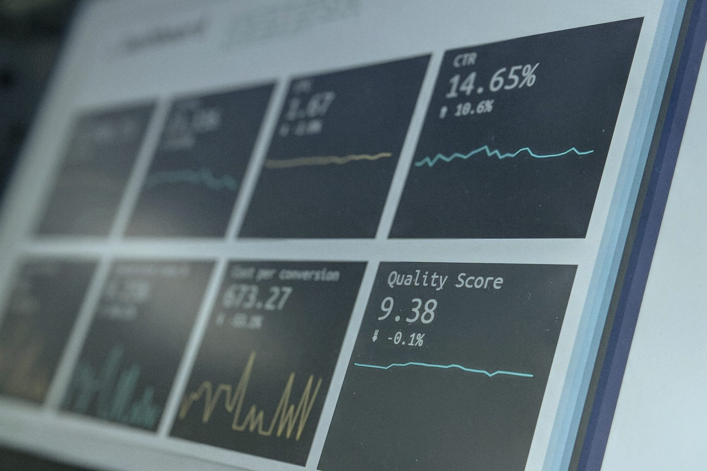

El diagnóstico y la arquitectura editorial que necesitas antes de empezar a hacer publicidad, publicar en redes o construir tu marca.The diagnosis and editorial architecture you need before you start advertising, posting on social media or building your brand.
IA Comunica es el trabajo de base que decide si todo lo demás funciona. Entiendes dónde estás, defines qué decir y a quién, y dejas instalado un sistema editorial —con apoyo de IA— que produce con criterio desde el primer mes.IA Comunica is the groundwork that decides whether everything else works. You understand where you stand, define what to say and to whom, and leave an editorial system in place —with AI support— that produces with judgment from the very first month.
Empresas, despachos profesionales y fundadores que se encuentran en un momento de crecimiento y buscan: destacar frente a la competencia, llegar a quienes de verdad importan —clientes, inversores, prensa— y construir autoridad de forma medible y sostenible.Companies, professional firms and founders at a growth moment who are looking to: stand out from the competition, reach the people who truly matter —clients, investors, press— and build authority in a measurable, sustainable way.
Un espacio que es tuyo y de nadie más: qué dices, cómo lo dices y desde dónde hablas.A space that is yours and no one else's: what you say, how you say it, and the ground you speak from.
Una voz reconocible que se sostiene en todos los canales y en cada persona que representa la marca.A recognizable voice that holds up across every channel and every person who represents the brand.
Comunicación que no solo suena bien: construye autoridad ante la prensa y los públicos clave y mueve el negocio.Communication that doesn't just sound good: it builds authority with press and key stakeholders and moves the business.
Análisis de los mensajes, canales, contenidos y tono de la marca y sus portavoces. Detectamos inconsistencias, fortalezas y áreas de mejora, y cómo encaja todo con los valores y objetivos del negocio.Analysis of the messaging, channels, content and tone of the brand and its spokespeople. We detect inconsistencies, strengths and areas for improvement, and how it all aligns with the values and goals of the business.
Estudio comparativo de competidores y referentes del sector para identificar huecos de conversación, oportunidades de diferenciación y buenas prácticas aplicables.A comparative study of competitors and sector leaders to identify conversation gaps, differentiation opportunities and applicable best practices.
Agentes y flujos repetibles para automatizar la producción editorial: variaciones por canal y portavoz, borradores de notas de prensa, briefs de oportunidad y contenido perenne. IA con criterio detrás, no plantillas genéricas.Repeatable agents and workflows to automate editorial production: variations by channel and spokesperson, press release drafts, opportunity briefs and evergreen content. AI with judgment behind it, not generic templates.
Todo queda documentado y operativo, listo para entregar a tu equipo.Everything is documented and operational, ready to hand to your team.
Estrategia, narrativa, calendario y una guía de uso de IA en un único documento operativo.Strategy, narrative, calendar and an AI usage guide in a single operational document.
Estructuras replicables para lanzamientos y captación de leads.Replicable structures for launches and lead capture.
Una base de medios, podcast y canales clave para tu PR, lista para activar.A base of key media, podcasts and channels for your PR, ready to activate.

Sprints, métricas y revisiones. Siempre sabes qué se hace, por qué y qué retorno trae.Sprints, metrics and reviews. You always know what's being done, why, and what return it brings.
La IA acelera la investigación, la estructuración y la producción. El criterio profesional es tuyo.AI speeds up research, structuring and production. The professional judgment is yours.
Cada recomendación y proceso se ajusta a tu equipo, tus recursos y el momento en el que está tu negocio.Every recommendation and process is scaled to your team, your resources and the stage your business is at.
Una fase no: un proyecto. Cuando termina, tienes un sistema completo que funciona con o sin acompañamiento posterior.Not a phase: a project. When it ends, you have a complete system that works with or without ongoing support.
Más consistencia entre las distintas voces de la marca, más autoridad ante la prensa y los públicos clave, y una base sólida —medible y sostenible— sobre la que construir marketing y comunicación.More consistency across the brand's different voices, more authority with press and key stakeholders, and a solid —measurable and sustainable— foundation on which to build marketing and communication.
Cuéntame en qué punto está tu marca y vemos si este es el punto de partida que necesitas.Tell me where your brand is and we'll see if this is the starting point you need.